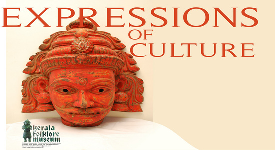

Culture

Kerala traces its non-prehistoric cultural genesis to its membership (around the AD 3rd century) in a vaguely defined historical region known as Thamizhagom — a land defined by a common Tamil culture and encompassing the Chera, Chola, and Pandya kingdoms. At that time, the music, dance, language (first Dravida Bhasha — "Dravidian language" — then Tamil), and Sangam (a vast corpus of Tamil literature composed between 1,500–2,000 years ago) found in Kerala were all similar to that found in the rest of Thamizhagom (today's Tamil Nadu).
Performing arts
Other Keralite performing arts include mohiniyaattam ("dance of the enchantress"), which is a type of graceful choreographed dance performed by women and accompanied by musical vocalizations. Thullal, Thirayattam, padayani, and theyyam are other important Keralite performing arts.Thirayattam is one of the most outstanding Ethnic art of kerala.
Folklore

The folklore of Kerala includes elements from the traditional lifestyle of the people of Kerala. The traditional beliefs, customs,rituals etc. are reflected in the folkart and songs of Kerala. Kerala has a rich tradition of Folklore.
Folklore in this region is a spontaneous expression of human behavior and thoughts. Generally speaking, Folklore could be defined as the lore of the common people who had been marginalized during the reign of feudal Kings. The Keralites
have their culture and lore which were mostly part of agricultural. Sowing, planting of nharu (seedling), clearing out the weeds, harvests etc. are the different stages of agriculture which have their typical rituals. Numerous songs and performing arts are accompanied with them. Kanyar Kali, Padayani, Mudiyettu, Thirayattam, Malavayiyattam, Theyyam, Kothamooriyattam, Nira, Puthari, etc. are some of the ritual folklore of Kerala. It was under the rule of Kolathiris, the Kings of Kolathunadu, and they codified the rituals, beliefs, taboos and folk performing arts.
Onam
Another distinct feature of the festival is 'Ona Sadhya' (Onam Feast) and consists of numerous dishes served on banana leaf and 'Ona Kodi' (new dress for the special occasion).